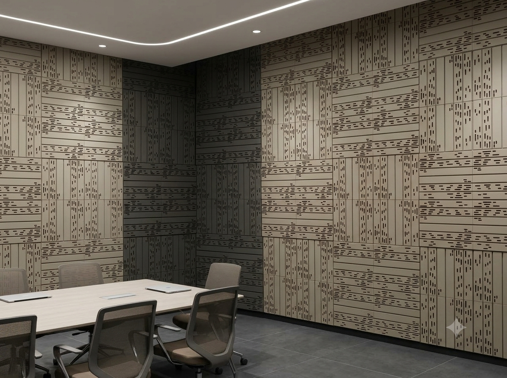

Section 01 · Delivered References
1.0Built, installed, in daily use
4+Delivered Projects
500mm Precision Grid
NRC 0.95Peak Lab Absorption
MumbaiEngineered & Built
Our panels are in service in commercial AV suites, screening rooms, feature elevations, and acoustic corridors across Mumbai.
Project 01: AV Suite

Terracotta Fluted Tile Grid
Mumbai Screening Room
Project 02: Healthcare & Studio

Cleanroom Solid Acoustic Variant
Mumbai Studio
Project 03: Illuminated Elevation

Integrated LED Platform
Mumbai Installation
Project 04: Architectural Grid

Modular Platform Grid
Delivered Project
AV Screening Rooms
Deep standoff tuning captures low-frequency reverberation for clean cinema bass response.
Executive Boardrooms
Targets 500–2000 Hz speech bands for crisp teleconferencing and zero echo.
Commercial Corridors
Shallow 50mm profile dampens high-traffic footstep echo and ambient noise.
D'WALL Acoustic Panel SystemPage 02